BOROUGH / 0063 / MODEL ROUND 1Four model languages
Twelve purpose-built models: a detached house, residential tower and passenger car in four directions. Geometry varies deliberately; warm material colours, cameras, light and scale category are shared. Use the buttons to compare a direction, or show all four. Open close views beneath each group.
| Direction | Model language |
|---|
| Realistic | Articulated house wings, finer joinery, individual tower balconies and setbacks, shaped sedan with wheel arches. A first procedural approximation of realistic construction. |
| City-builder | SC2013-inspired proportions: pronounced gables, larger windows, expressive tower crown and a taller, chunkier car cabin. |
| Voxel | Crisp cuboid construction, stepped roofs and tower setbacks, grid glazing, block-built car and square wheels. |
| Low-poly | Asymmetric folded house roof, octagonal tower, angular car profile and polygonal wheels. |
These are model interpretations, not shader swaps. Exact architectural composition is allowed to change in this round. No interiors or live simulation; this is a direction study, not finished production art.
Detached House
Realistic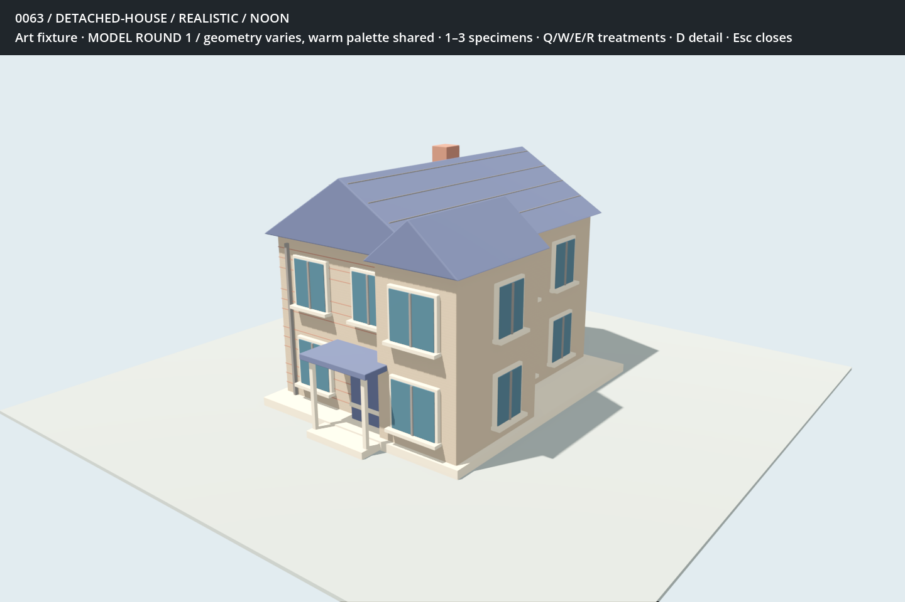
2,740 imported triangles · 6 mesh surfacesCity-Builder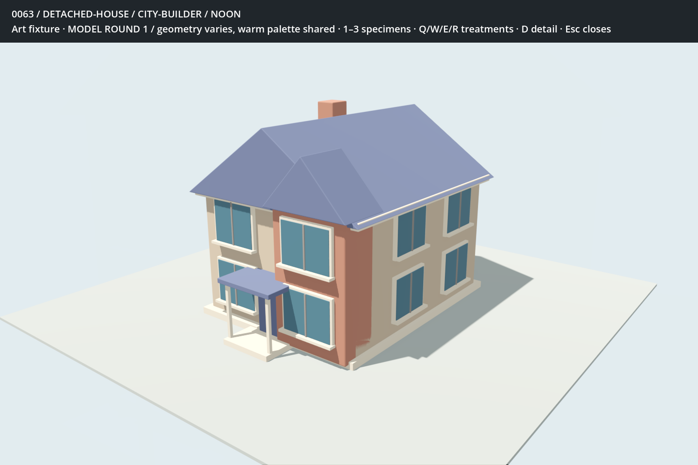
3,248 imported triangles · 6 mesh surfacesVoxel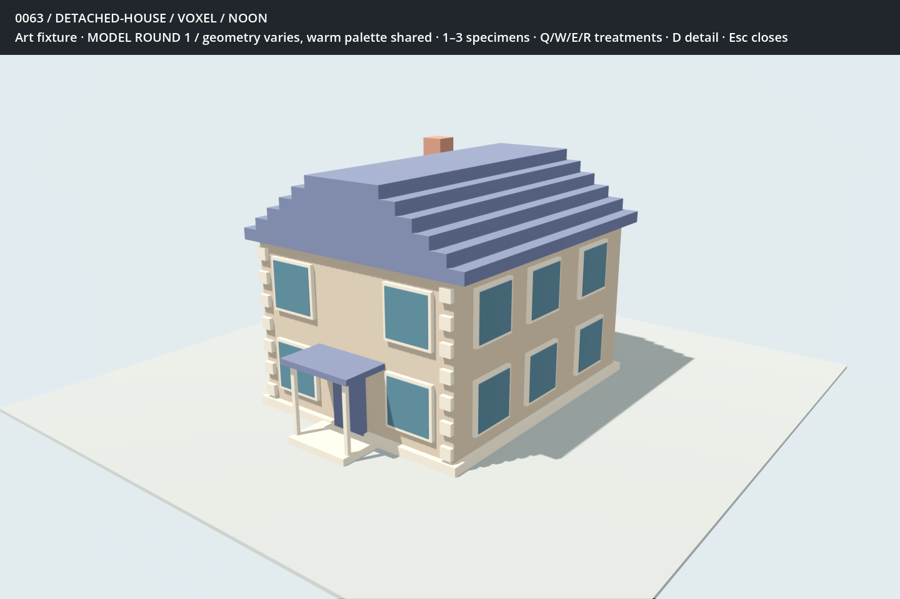
576 imported triangles · 5 mesh surfacesLow-Poly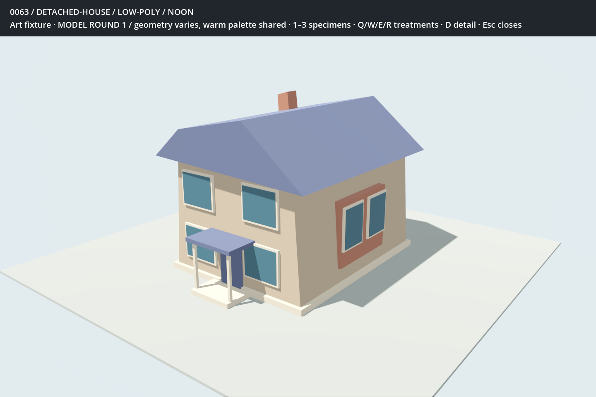
264 imported triangles · 5 mesh surfaces Close views
Realistic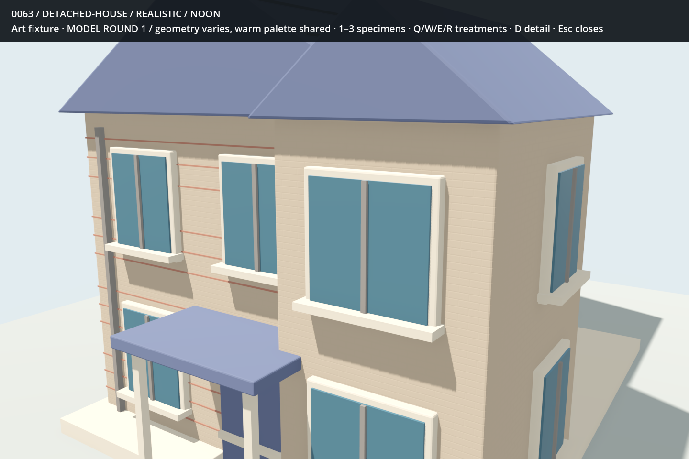
2,740 imported triangles · 6 mesh surfacesCity-Builder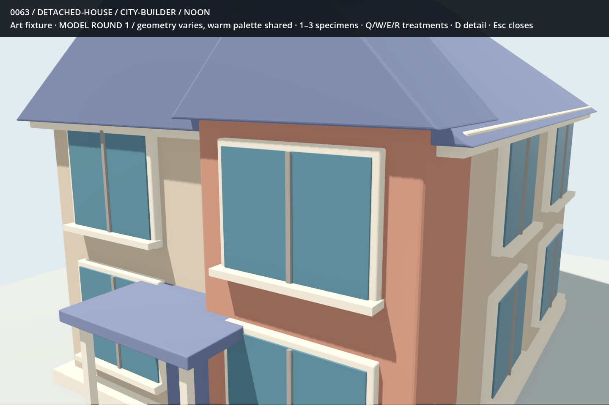
3,248 imported triangles · 6 mesh surfacesVoxel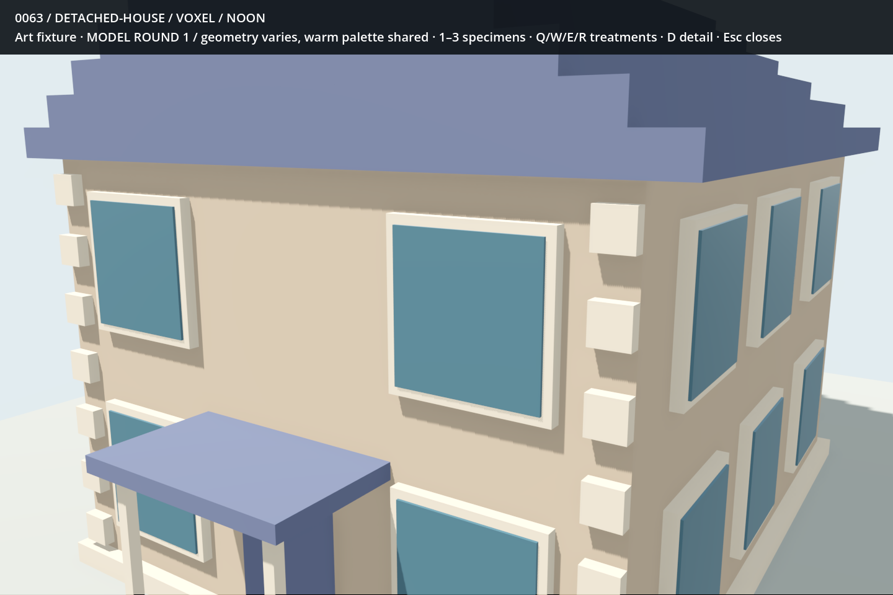
576 imported triangles · 5 mesh surfacesLow-Poly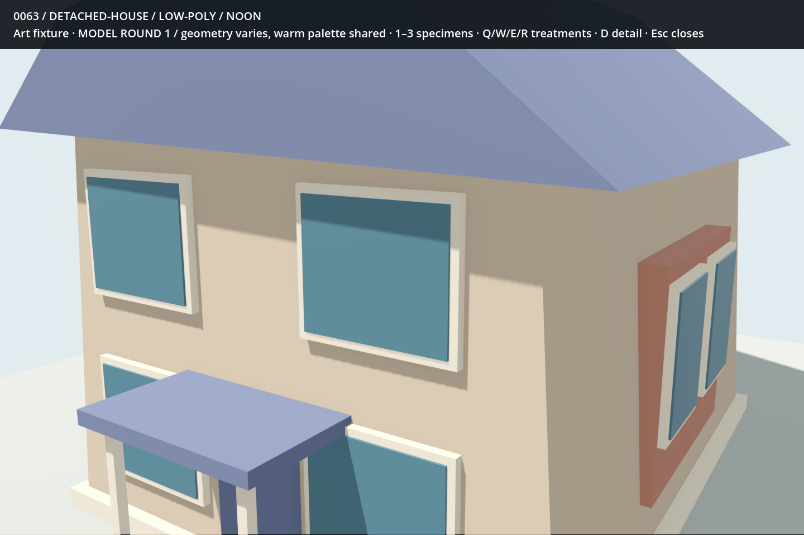
264 imported triangles · 5 mesh surfaces Residential Tower
Realistic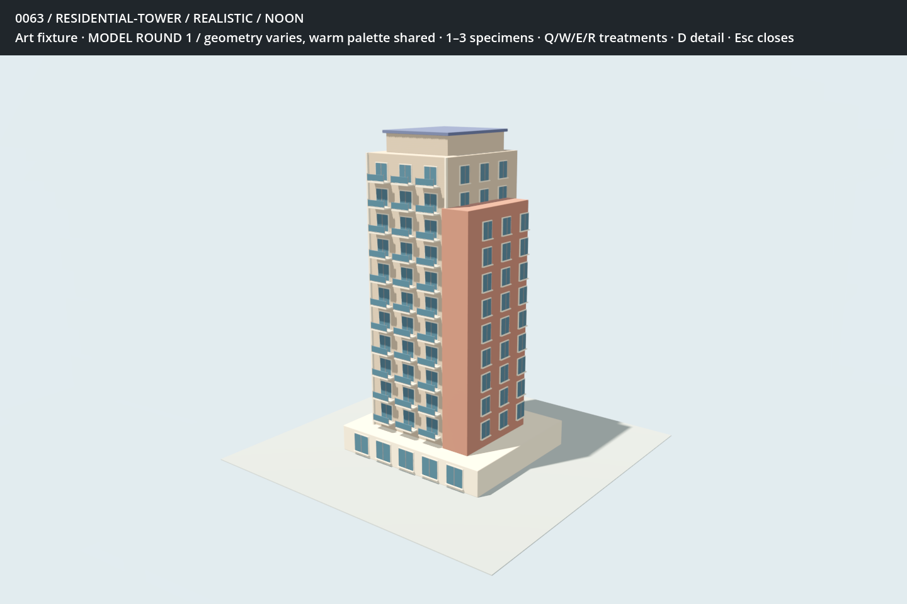
15,540 imported triangles · 6 mesh surfacesCity-Builder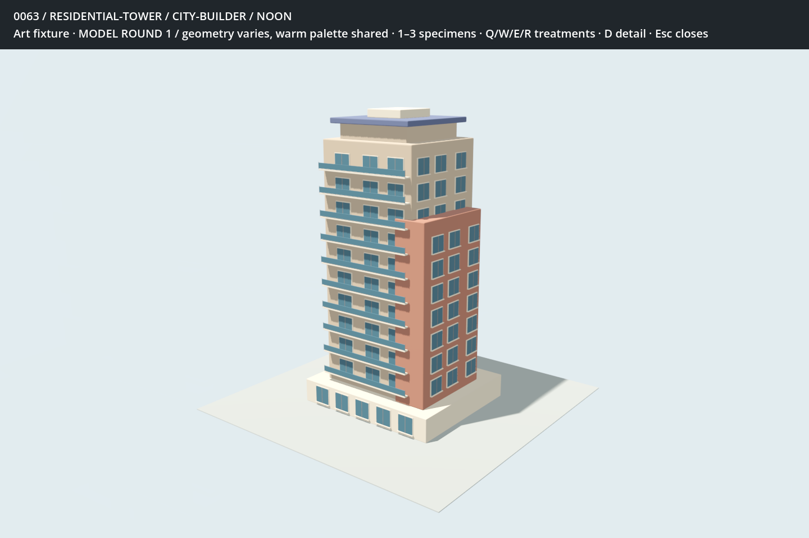
17,928 imported triangles · 6 mesh surfacesVoxel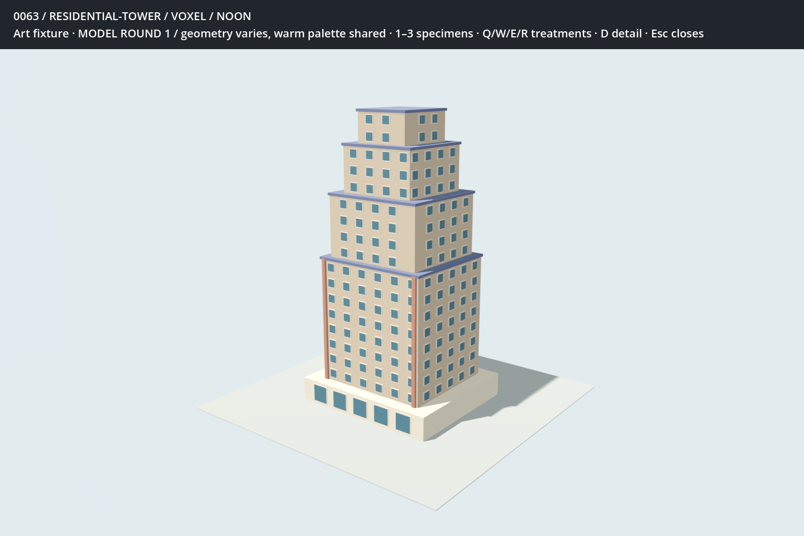
3,900 imported triangles · 5 mesh surfacesLow-Poly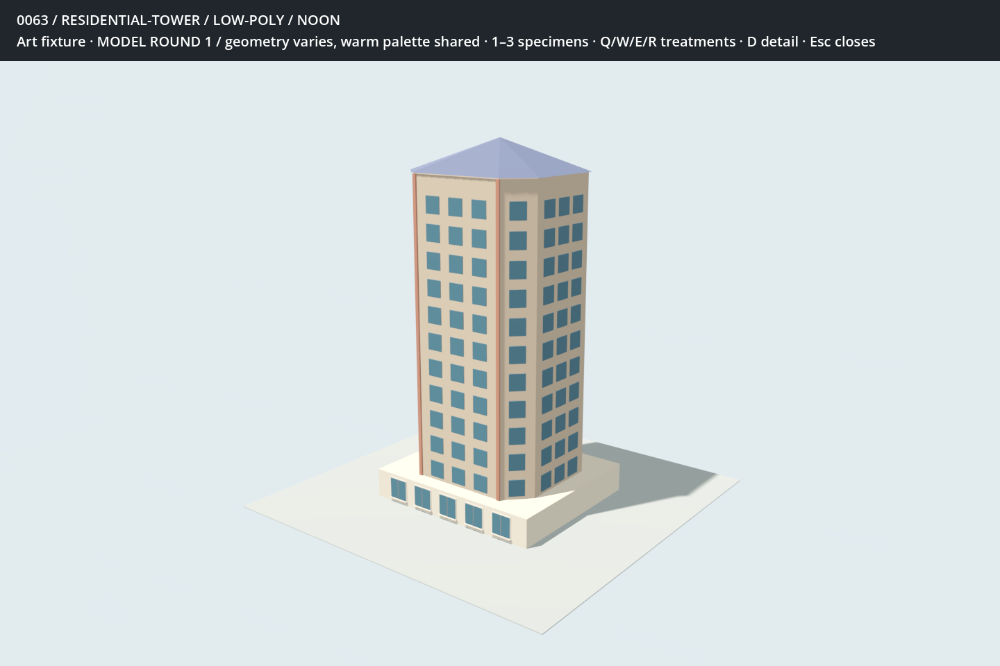
2,424 imported triangles · 6 mesh surfaces Close views
Initial style executions, not a final selection. These are isolated art specimens with no simulation state. Counts describe imported meshes, not measured rendering costs. Motion, city-scale repetition and rendering costs remain to be tested.